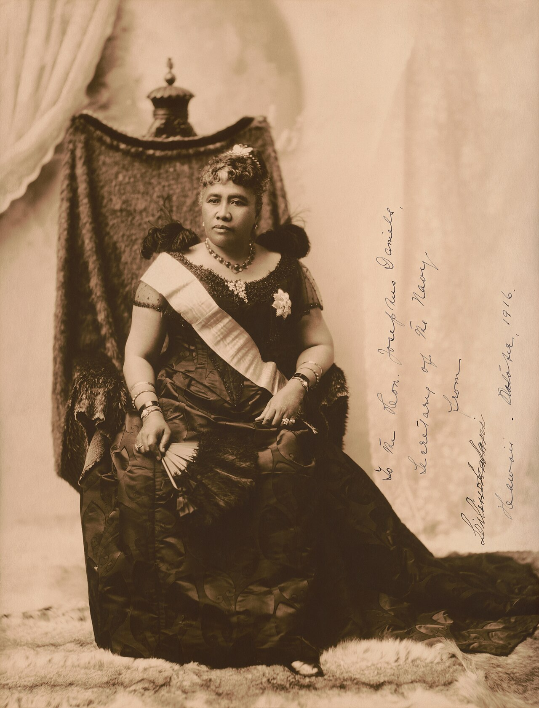

Directions: Study the photograph and the background note, read the 1898 statement, then answer the questions.

Background. Liliuokalani became queen of Hawaii in 1891. American missionaries had first arrived in the islands in 1820, and their descendants became sugar planters. A reciprocity treaty in 1875 let Hawaiian sugar enter the United States duty free, and the treaty's renewal in 1887 gave the United States the exclusive right to use Pearl Harbor as a naval station. In January 1893 a committee of American and European businessmen, backed by the American minister and by troops landed from an American warship, overthrew the Queen. The provisional government asked Washington to annex Hawaii. President Grover Cleveland concluded that the overthrow had been wrongful and refused.
An expansionist answers, 1898. Senator Albert Beveridge, campaigning in Indianapolis on September 16, 1898, stated the economic case for the new possessions. "But, today, we are raising more than we can consume. Today, we are making more than we can use. [...] Therefore, we must find new markets for our produce, new occupation for our capital, new work for our labor." The statement is quoted from the text of Beveridge's speech "March of the Flag" as carried in the TPSP source bank (1898 Indianapolis pamphlet, via Teaching American History). The cut is marked.
1. The photograph shows a sovereign ruler in formal dress, photographed two years before her overthrow. What does the existence of an independent Hawaiian monarchy, with its own queen and government, complicate in the expansionist description of Hawaii as an empty station on the route to Asia?
2. Name two different motives for American expansion that appear in the background note, and give the fact that shows each one at work in Hawaii.
3. In Beveridge's statement, what problem does he say the United States has, and what does he say the country must therefore do? Use his words where you can.
4. President Cleveland refused annexation after concluding the overthrow had been wrongful. State one argument an opponent of expansion could build on Cleveland's conclusion, and one argument a supporter could still make after it.
1. What does the independent Hawaiian monarchy complicate in the expansionist description? Hawaii was not empty and was not waiting to be claimed. It was a recognized kingdom with a sovereign, a constitution, and a government, photographed here in the person of its queen about 1891. Describing the islands as a station or a sugar field treats them as geography and resources. The monarchy is evidence of a people with a state of their own, whose consent annexation never obtained. Students should cite the Queen, the monarchy, or the 1893 overthrow as the complicating fact. [Blueprint 1]
2. Name two motives visible in the background note, with the fact that shows each. Any two, with facts. Markets and sugar interests: the 1875 reciprocity treaty admitted Hawaiian sugar duty free, and the planters who benefited led the overthrow and requested annexation. Sea power: the 1887 renewal gave the United States the exclusive right to use Pearl Harbor as a naval station, the coaling stop on the route to Asia. Mission: American missionaries arrived in 1820 and their descendants became the planter class, joining the religious presence to the economic one. Credit requires the fact, not only the motive's name. [Blueprint 1]
3. What problem does Beveridge state, and what must the country therefore do? The problem is surplus: in his words, Americans were "raising more than we can consume" and "making more than we can use." The required action, again in his words, is to "find new markets for our produce, new occupation for our capital, new work for our labor." Beveridge delivered "March of the Flag" in Indianapolis on September 16, 1898; the text is quoted from the TPSP bank, which follows the 1898 Indianapolis pamphlet via Teaching American History, and the cut in the passage is marked in the student text. [Blueprint 1]
4. One argument from Cleveland's conclusion for each side. Opponent: the president's own investigation found the overthrow wrongful, so annexation would reward an act committed against a friendly sovereign with American backing, and would take a country without its people's consent. Supporter: the wrongful act of 1893 did not erase the strategic and commercial facts, namely Pearl Harbor's value as a station and Hawaii's sugar trade with the United States, and a later, lawful annexation by Congress could still secure both. Accept either pairing when each side is argued from a fact in the background note. [Blueprint 1]
Teacher note. This check is formative and is tagged to Blueprint 1 throughout. Question 1 is the observation diagnostic. Students who describe only a portrait have not yet connected the photograph to the argument. Question 4 predicts success on the writing task, which requires students to handle the critics as well as the motives.